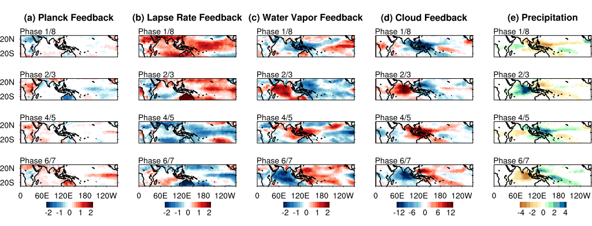
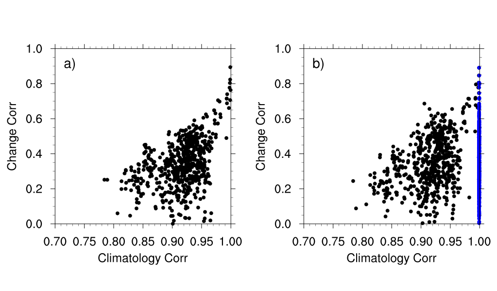

How radiative interactions affect tropical cyclones?
Interactions between radiation and convection are suppressed in a TC-permitting GCM. In the present-day climate, we found a significant reduction in global TC frequency and TC duration. More details can be found in Zhang et al. (2021).
- This figure shows the track density in the Control run (with radiative interactions; left), the ClimRad run (without radiative interactions; middle) and their difference (right).
- This figure compares TC duration (Control minus ClimRad). The blue (red) bars in each subplot indicate that there are more short-lived (fewer long-lived) TCs in the ClimRad run.
How radiation modulates the degree of aggregation and extreme precipitation?

- This figure compares annual maximum precipitation between the Control and ClimRad runs.
Different radiative feedbacks associated with the MJO
This study uses radiative kernels [Soden et al. (2008); Kramer et al. (2019)] to diagnose radiative feedbacks associated with the MJO. As an important driver of tropical intraseasonal variability, The MJO can be viewed as a kind of convective aggregation which involves interactions between clouds, circulation, radiation and water vapor. This work quantifies individual feedbacks (temperature, water vapor, surface albedo and clouds) asscociated with the MJO.
- This figure shows maps of the atmospheric radiative feedbacks during different phases of the MJO: (a) Planck, (b) lapse rate, (c) water vapor, (d) cloud (units: W m-2) and (e) precipitation anomalies (units: mm day-1)
How can we reduce the uncertainty in model projections of precipitation change?
There are large uncertainties in model simulations of the current climate and projections of future climate. Bias correction methods are often used to reduce intermodel spread based on observations. Regarding precipitation over land, we find that only model simulations of the current climate is improved while uncertainties in future projections remain large even after bias correction.
- This figure shows the cross‐model spatial correlation of the climatology (x axis) versus the cross‐model spatial correlation of the precipitation change (y axis). More details can be found in Zhang and Soden (2019)